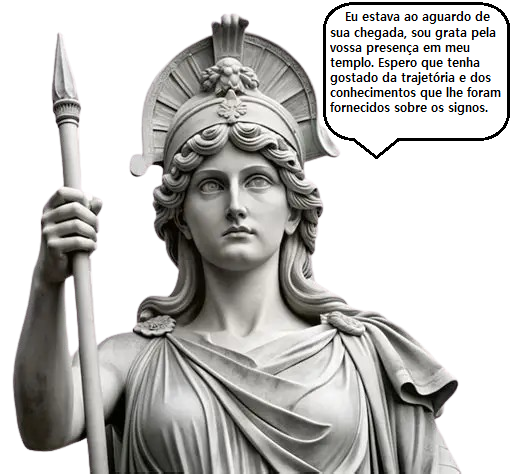

Parabéns! Você passou pelas doze casas... Agora, finalmente, está no Templo de Atena, assim, sua trajetória de conhecimento sobre os signos chega ao fim. Fique com os últimos detalhes sobre Atena e seu templo, por falar nisso, adivinha quem está presente?
O Templo de Atena era o coração espiritual de Atenas — um local sagrado dedicado à deusa da sabedoria, da estratégia e da guerra justa.
Foi construído no século V a.C. sobre a Acrópole de Atenas, um alto morro que servia de centro religioso e defensivo. O templo era o símbolo máximo da cidade e da cultura grega clássica. Lá ficava uma estátua colossal de Atena Partenos, feita de ouro e marfim pelo escultor Fídias.
Atena é uma das figuras mais importantes da mitologia grega. Ela representa sabedoria, estratégia e guerra justa, além de ser símbolo de razão, justiça e civilização.
